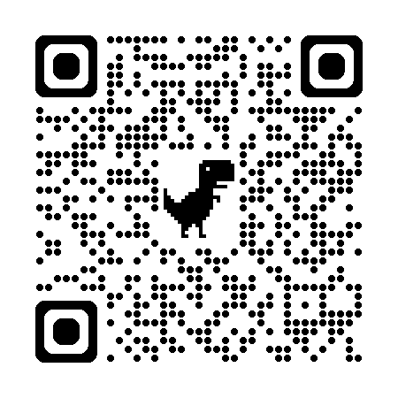
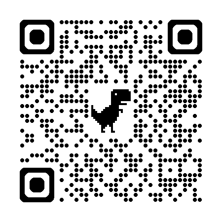
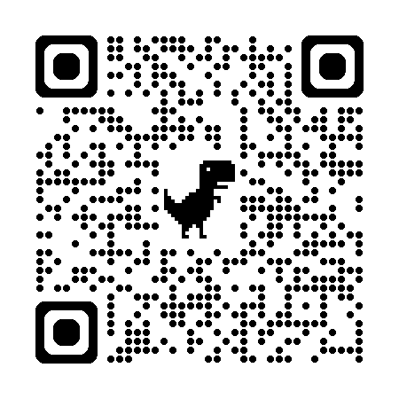

nutriverse
Project Launch
27 February 2026
nutriverse is


Open source

Developing robust, well-tested, and performant R packages for nutrition data analysis
Provide reliable tools that support the full lifecycle of nutrition analytics, from data ingestion and cleaning to statistical analysis, modelling, and reproducible reporting.
Collective
Core team of people committed to transforming how nutrition data is used, understood, and shared.
We believe that better, more transparent nutrition data analytics can challenge inequities, strengthen public health, and support food systems that work for everyone.
Through collaboration and open tools, we push for analytical practices that are rigorous, reproducible, and accountable.
We share power and knowledge, support one another’s work, and turn nutrition data into a force for social and health justice.

Community of practice

Brings together nutrition data analysts, researchers, and practitioners who are committed to learning from one another.
Provides a shared space to exchange methods, tools, and real-world experiences across research, policy, and practice.
Through peer learning, collaborative problem-solving, and open discussion, the community supports rigorous, reproducible analytics.

Anthropometric surveys workflow

Dietary assessment workflow

CMAM coverage assessment workflow

RapidSurveys

Our community is our greatest asset, diversity our greatest strength


Link
Belong to a supportive community
Meet and work with other users and developers of nutriverse packages
Gain exposure in the open science R community
Learn
Be informed by reading and listening
Improve the reproducibility of your research and apply best practices in your work
Improve your R and software development skills
Create
Improve and promote open science in your field
Influence package development
Improve package documentation and examples
Promote best practices for R development
Support
Support nutriverse or give back to open source
Help other community members
Zulip

an organised team chat app designed for efficient communication
The publicly-available forum can be viewed at https://nutriverse.zulipchat.com
To join the discussion, you will need to be invited to join the community chat group on Zulip
GitHub

Service provider of hosting for software development and version control using git
includes features such as bug tracking, feature request, task management, continuous integration and wikis for every project
Lowers the barriers to collaboration
Community Calls
quarterly Community Calls to hear about:
- latest nutriverse developments;
- talk about current and new projects by nutriverse or by our community members;
- discuss best practices, and;
- listen to Q&As with our nutriverse developers or well-known developers of packages and tools that our community members love to use.
first Community Call is on Wednesday, 18 March 2026 featuring Dr Noam Ross, Executive Director of rOpenSci.
How are all these funded?
 

All software made available to the nutrition community since 2018 with no direct funding
Some material resources and in-kind inputs through partners
- University of Oxford for GitHub Pro resources (worth at least $360/year)
- Team messaging and chat services via Zulip (worth at least $4000/year)
At the start of 2026, we have been fortunate to be fiscally-hosted by the Open Source Collective
Socials
